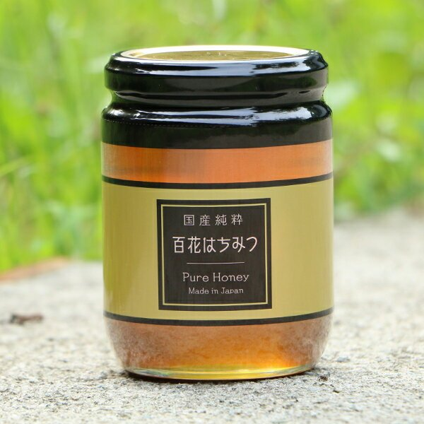
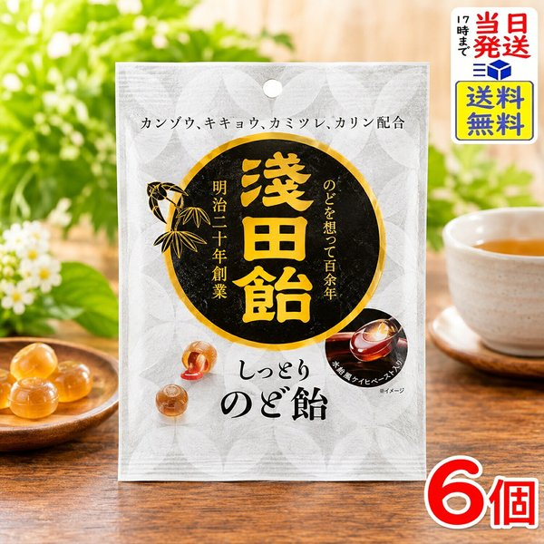
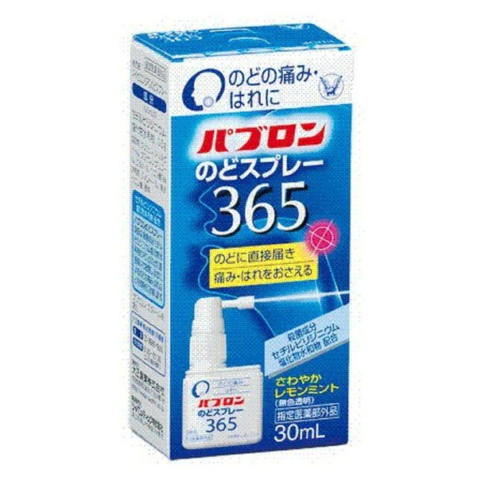
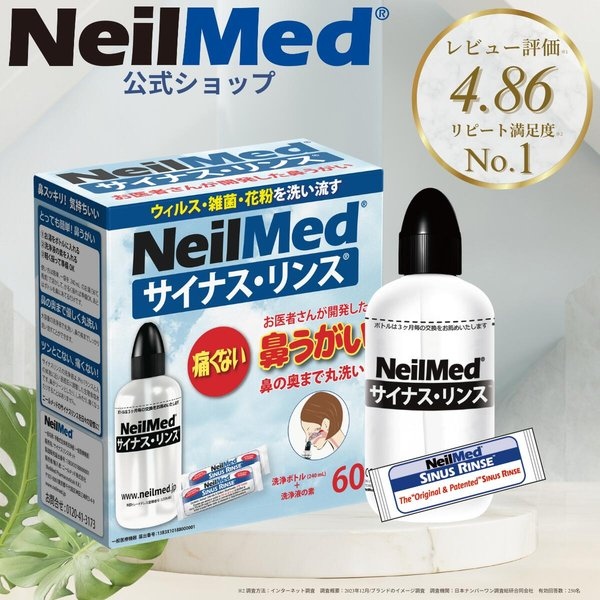
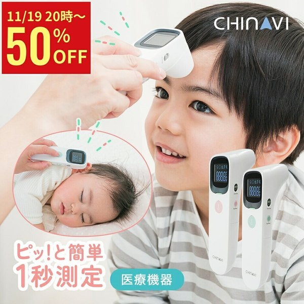
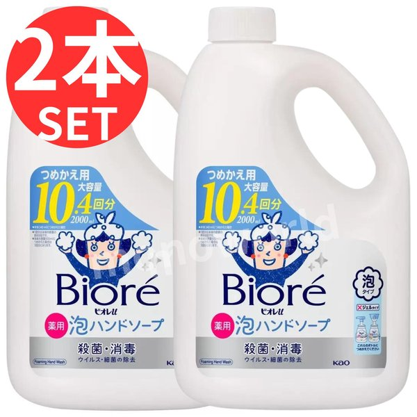
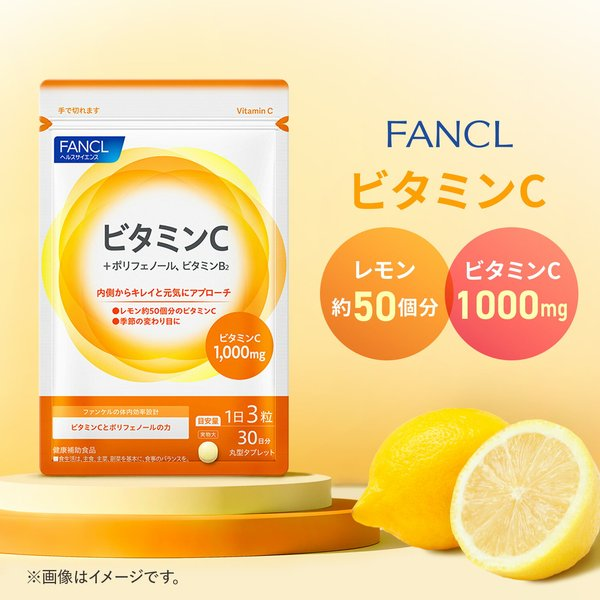
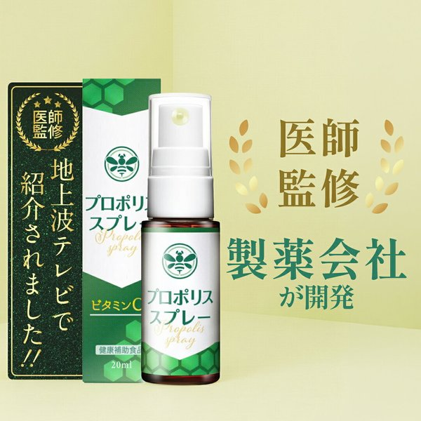
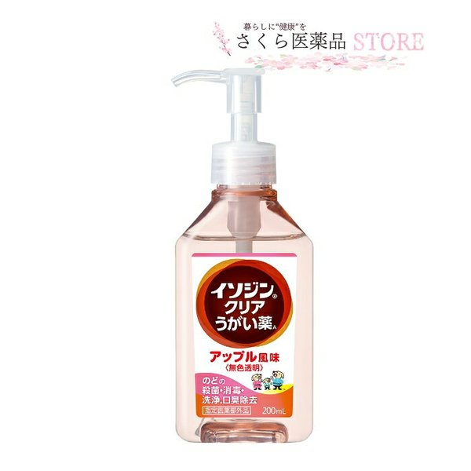

【2026年冬】乾燥・風邪シーズンを乗り越える！マヌカハニー・のどケア・鼻うがい＆非接触体温計など家族の健康管理グッズおすすめ10選
冬に体調を崩すきっかけは、乾燥とのどの乾き、そして家族のあいだでのうつし合いです。加湿やマスクだけでは足りない部分を、食べる・うがいする・測る・洗うの4方向から埋めると、家の中でできる備えが整います。
選ぶ軸は、毎日続けられる味か、家族で共用できるか、そして使う場面がはっきりしているかです。はちみつ類はスプーン1杯から始められ、のど飴やうがい薬は帰宅後のルーティンに組み込めます。鼻うがいは花粉やホコリを洗い流す用途で、専用の洗浄液とボトルを使うと刺激が少なく済みます。体温計は非接触型なら、寝ている子どもの検温でも起こさずに済みます。医薬品は使用上の注意を読み、症状が続くときは医療機関に相談してください。
本記事では、楽天市場で人気・高評価の冬の健康管理グッズ10選を、実売価格とレビュー評価つきで写真付き紹介します。
- おすすめ10選 スペック・特徴比較表
- BEST 1｜マヌカハニー UMF15+ 250g（MGO512以上・UMF協会認定）
- BEST 2｜国産純粋はちみつ 300g 瓶（非加熱・日本製）
- BEST 3｜浅田飴 しっとりのど飴 61g×6個（個包装）
- BEST 4｜パブロン のどスプレー365 30ml（指定医薬部外品）
- BEST 5｜サイナスリンス キット60包（洗浄ボトル付・生理食塩水）
- BEST 6｜非接触体温計 JPD-FR409-C（1秒測定・医療機器認証）
- BEST 7｜ビオレu 泡ハンドソープ つめかえ 4L（2L×2本・薬用）
- BEST 8｜ファンケル ビタミンC サプリ（約50日分・1000mg）
- BEST 9｜プロポリススプレー 20ml（携帯用・医師監修）
- BEST 10｜イソジンクリアうがい薬 アップルミント味 200mL（うがい約200回分）
- 【読者負担0円】買わなくても得する無料サービス
- まとめ：冬の健康管理グッズ10選の選び方
| 順位 | 商品名 | ブランド | 最大の特徴・おすすめ理由 | 総合評価 |
|---|---|---|---|---|
| BEST 1 | マヌカハニー UMF15+ 250g（MGO512以上・UMF協会認定） | HONEY VALLEY | UMF15+・MGO512以上の数値表示 | 4.71 |
| BEST 2 | 国産純粋はちみつ 300g 瓶（非加熱・日本製） | 丸果フーズ | 国産・非加熱の純粋はちみつ | 4.66 |
| BEST 3 | 浅田飴 しっとりのど飴 61g×6個（個包装） | 浅田飴 | 6個セットで置き場所ごとに使える | 4.96 |
| BEST 4 | パブロン のどスプレー365 30ml（指定医薬部外品） | 大正製薬 | のどに直接スプレーできる | 4.89 |
| BEST 5 | サイナスリンス キット60包（洗浄ボトル付・生理食塩水） | NeilMed（ニールメッド） | 60回分の洗浄液とボトルのセット | 4.68 |
| BEST 6 | 非接触体温計 JPD-FR409-C（1秒測定・医療機器認証） | CHINAVI | 1秒で測れる非接触タイプ | 4.37 |
| BEST 7 | ビオレu 泡ハンドソープ つめかえ 4L（2L×2本・薬用） | 花王 ビオレu | 4Lの大容量で買い足しが減る | 4.67 |
| BEST 8 | ファンケル ビタミンC サプリ（約50日分・1000mg） | ファンケル（FANCL） | 1日1,000mgのビタミンC | 4.75 |
| BEST 9 | プロポリススプレー 20ml（携帯用・医師監修） | 製薬会社開発（is-near） | 20mlの携帯サイズ | 4.67 |
| BEST 10 | イソジンクリアうがい薬 アップルミント味 200mL（うがい約200回分） | イソジン（塩野義製薬） | 約200回分の大容量 | 4.69 |
マヌカハニー UMF15+ 250g（MGO512以上・UMF協会認定）

ニュージーランド産のマヌカハニーで、UMF15+（MGO512以上）のグレード。非加熱・無添加で、抗菌成分の数値が表示されているので、目的に合うものを選びやすいです。そのままスプーン1杯を舐めるほか、白湯に溶かしたりトーストに塗ったりできます。250g入りで、毎日小さじ1杯なら1ヶ月半ほどもちます。楽天市場での実売価格は約4,980円（2026年11月時点）。
- UMF15+・MGO512以上の数値表示
- 非加熱・無添加
- レビュー2,999件・評価4.71
- 独特の刺激があるので、最初は小さじ半分から試す
国産純粋はちみつ 300g 瓶（非加熱・日本製）

国産の純粋はちみつを300gの瓶に詰めたもの。非加熱で、花の香りが残る味わいです。マヌカハニーほど強くなく、毎日のヨーグルトやトースト、白湯に溶かす使い方に向いています。1,410円と手が出しやすく、家族で使うならまずこちらを常備し、調子が気になるときだけマヌカハニーを使う住み分けができます。楽天市場での実売価格は約1,410円（2026年11月時点）。
- 国産・非加熱の純粋はちみつ
- 300gで家族で使える
- レビュー3,613件・評価4.66
- 1歳未満の乳児には与えない
浅田飴 しっとりのど飴 61g×6個（個包装）

カンゾウ、キキョウ、カミツレ、カリンを配合したのど飴。舐めると粘りのある甘さが広がり、乾燥した部屋で喉が張る感じをやわらげます。個包装なので、ポーチや職場の引き出し、枕元と分けて置けます。6個セットなので、家族で使っても1ヶ月ほどもちます。楽天市場での実売価格は約1,180円（2026年11月時点）。
- 6個セットで置き場所ごとに使える
- 個包装で持ち歩きやすい
- 評価4.96の高評価
- レビューは28件と少なめで、口コミはこれから増える段階
パブロン のどスプレー365 30ml（指定医薬部外品）

のどに直接スプレーするタイプののどケア用品。炎症を抑える成分と殺菌成分が入り、声を使う日の前後や、乾燥で喉が痛むときに使えます。30mlの携帯サイズで、バッグに入れておけば外出先でも使えます。うがいができない場所でも、のどに直接届くのがスプレーの利点です。楽天市場での実売価格は約733円（2026年11月時点）。
- のどに直接スプレーできる
- 30mlの携帯サイズ
- 評価4.89
- レビューは9件と少なく、使用前に添付文書の注意を読む
サイナスリンス キット60包（洗浄ボトル付・生理食塩水）

鼻うがい用の生理食塩水と専用ボトルのキット。60包入りで、1包を240mlのぬるま湯に溶かして使います。花粉やホコリ、ウイルスが付着した鼻の奥を洗い流す用途で、風邪をひきやすい時期の帰宅後のルーティンに向いています。ボトルは押すと一定の圧で出る作りで、初めてでも勢いを調整しやすいです。楽天市場での実売価格は約3,080円（2026年11月時点）。
- 60回分の洗浄液とボトルのセット
- 一定の圧で洗いやすい
- レビュー879件・評価4.68
- 水道水は使わず、必ず煮沸して冷ました水か精製水を使う
非接触体温計 JPD-FR409-C（1秒測定・医療機器認証）

おでこや耳に近づけて1秒で測れる非接触体温計。医療機器の認証を取得していて、寝ている子どもの検温でも体を起こさずに済みます。大人・子ども兼用で、表面温度と体温の両方を測れます。家族の誰かが発熱したとき、1回ごとに消毒しながら使えるのも衛生面で助かります。楽天市場での実売価格は約3,680円（2026年11月時点）。
- 1秒で測れる非接触タイプ
- 寝ている子どもの検温にも使える
- レビュー2,059件・評価4.37
- 測る位置がずれると値がぶれるので、額の中央で測る
ビオレu 泡ハンドソープ つめかえ 4L（2L×2本・薬用）

薬用の泡ハンドソープの大容量つめかえ。2Lが2本で計4Lあり、家族で使っても半年ほどもちます。泡で出るタイプなので、子どもでも手洗いの習慣が付けやすく、帰宅時・食事前の手洗い回数が増える冬に向いています。詰めかえノズル付きで、ボトルにそのまま注げます。楽天市場での実売価格は約2,850円（2026年11月時点）。
- 4Lの大容量で買い足しが減る
- 泡タイプで手洗いしやすい
- レビュー251件・評価4.67
- 重いので、詰めかえ用のボトルへ小分けして使う
ファンケル ビタミンC サプリ（約50日分・1000mg）

1日摂取目安あたりビタミンC1,000mgを摂れるサプリ。飲みやすい小さなカプセルで、食事で野菜が足りない日を補う用途に向いています。約50日分で438円と続けやすく、冬のあいだ毎朝飲む習慣にしやすい価格です。ビタミンCは水に溶けるため、一度にまとめてより毎日欠かさず摂るほうが向いています。楽天市場での実売価格は約438円（2026年11月時点）。
- 1日1,000mgのビタミンC
- 約50日分で438円
- レビュー5,925件・評価4.75
- 飲みすぎても吸収されにくいので、目安量を守る
プロポリススプレー 20ml（携帯用・医師監修）

プロポリスエキスを配合した携帯用のスプレー。のどに直接吹きかけて使うタイプで、20mlのボトルはポーチに入ります。ビタミンCも配合され、乾燥や声の使いすぎで喉が気になるときのケアに向いています。ミツバチ由来の成分なので、はちみつ類にアレルギーのある人は注意が必要です。楽天市場での実売価格は約1,980円（2026年11月時点）。
- 20mlの携帯サイズ
- プロポリスとビタミンCを配合
- レビュー1,139件・評価4.67
- はちみつ・蜂産品にアレルギーのある人は使わない
イソジンクリアうがい薬 アップルミント味 200mL（うがい約200回分）

ポビドンヨード配合のうがい薬の無色透明タイプ。200mLで約200回分あり、帰宅後とうがいを習慣にすると1ヶ月半ほどもちます。アップルミント味で、ヨードのにおいが苦手な人でも続けやすい味です。のどの殺菌・消毒が目的の指定医薬部外品で、風邪が流行る時期の帰宅後のルーティンに向いています。楽天市場での実売価格は約948円（2026年11月時点）。
- 約200回分の大容量
- 無色透明で味も飲みやすい
- 評価4.69
- レビューは29件と少なめで、用法・用量は添付文書で確認する
この記事の商品を買う前に、まずは無料で得する選択肢をチェック。どれも登録・利用は0円で、無料期間中に解約すれば料金はかかりません。読みたい雑誌がある人、ポイントを貯めたい人、アンケートなら気軽という人、それぞれに合うものを選べます。
初回31日無料・無料期間中に解約すれば0円 → 楽天ポイントモール｜登録無料で毎日ポイ活
買い物なしでもポイントが貯まる無料サービス → 楽天インサイト｜アンケートに答えてポイント
登録無料・すきま時間のアンケートで貯まる → 楽天カード｜年会費永年無料
新規発行・年会費ずっと0円 →
4つのサービスの違いと使い分けは「出費0円で得する！買わずにポイントが貯まる無料サービス厳選4選」でまとめています。
💡 まとめ：冬の健康管理グッズ10選の選び方
冬の体調管理は、家の中で完結する備えを増やすほど安定します。はちみつは毎朝のヨーグルトや白湯に、のど飴とうがい薬は帰宅後のルーティンに、鼻うがいは花粉やホコリが多い日の夜に。体温計は家族の誰かが熱を出したときに、起こさず測れる非接触型があると動きやすくなります。手洗いは泡タイプの大容量を置いて、回数を増やすのが基本です。サプリは食事の代わりではなく不足を補うものと考え、飲み合わせが気になる場合は医師や薬剤師に確認してください。買い足す前に、家にあるものを使い切る順番を決めると、重複した備蓄を防げます。
楽天市場では「5と0のつく日」や「お買い物マラソン」などのキャンペーンに合わせて購入すると、ポイント還元が最大化してお得に手に入ります。ぜひチェックしてみてくださいね。